La guía visual de estudio para el examen: esquemas, tablas de repaso, cuadros «idea clave / ojo / truco» y un autotest por unidad de UF2404, UF2405 y UF2406.
UF2404Fundamentos: ingeniería del software, metodologías y orientación a objetos
Base de todo lo demás. Repaso condensado a partir de los documentos de apoyo (INTECO, paradigma OO, modelo E-R y gestión de memoria): ciclos de vida, metodologías tradicionales y ágiles, paradigma orientado a objetos, modelo E-R y recolector de basura. El temario completo de UF2404 está en las lecciones del curso.
UD1
Ingeniería del software y ciclos de vida
Qué es el software, qué es la ingeniería del software y los modelos de ciclo de vida (cascada, V, iterativo, incremental, espiral, prototipos).
Ingeniería del software: disciplina que aplica un enfoque sistemático, disciplinado y cuantificable al desarrollo, operación y mantenimiento del software. Se apoya en tres capas: procesos, métodos y herramientas.
Idea clave: Las tres capas de la ingeniería del software: Procesos (el «qué y cuándo») · Métodos (el «cómo») · Herramientas (el apoyo automatizado).
Modelos de ciclo de vida
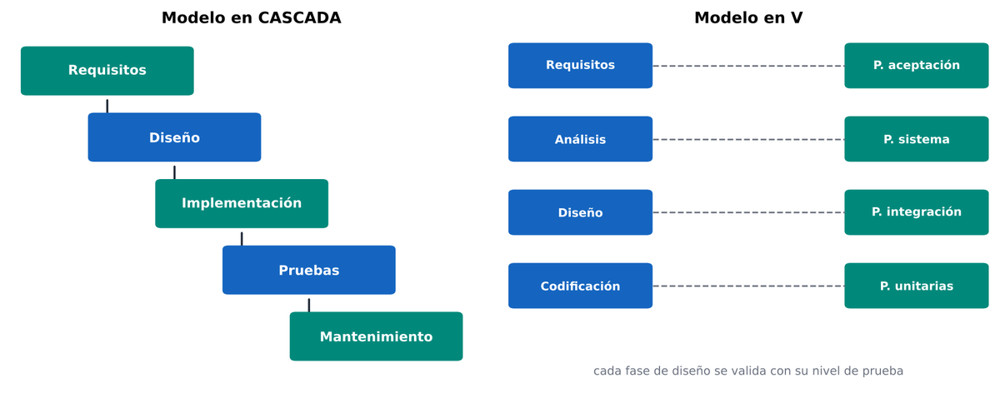
Cascada y V: el segundo relaciona cada fase con su prueba.
UD1: Ingeniería del software y ciclos de vida
Modelo
Descripción
Cuándo encaja
Cascada
Fases lineales, cada una produce la entrada de la siguiente
Requisitos estables y bien conocidos
En V
Variante de cascada: cada fase de diseño tiene su fase de prueba
Verificación y validación rigurosas
Iterativo
Se repite el ciclo refinando el producto completo
Requisitos que se aclaran con el tiempo
Incremental
Se entrega el sistema en partes funcionales sucesivas
Entregas tempranas de valor
Espiral
Iteraciones con análisis de riesgos en cada vuelta
Proyectos grandes y de alto riesgo
Prototipos
Se construye una maqueta para validar requisitos con el usuario
Requisitos poco claros / interfaz
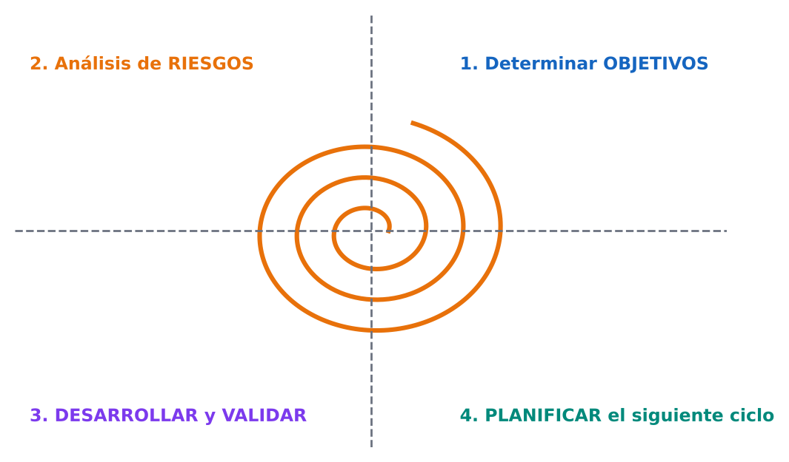
Modelo en espiral.
Ojo:ISO/IEC 12207 establece un marco de referencia común para los procesos del ciclo de vida del software. No impone un modelo concreto.
Autotest UD1
UD2
Metodologías tradicionales y ágiles
RUP, desarrollo iterativo e incremental, manifiesto ágil, XP, Scrum, DSDM, TDD, integración continua y programación por pares.
1. RUP – Rational Unified Process
UD2: Metodologías tradicionales y ágiles
Fase
Objetivo
Iniciación
Definir el alcance del proyecto
Elaboración
Analizar las necesidades del negocio y definir los principios arquitectónicos
Construcción
Crear el diseño de la aplicación y el código fuente
Transición
Entregar el sistema a los usuarios
Idea clave: RUP: 4 fases × 9 disciplinas (6 de ingeniería: modelado de negocio, requisitos, análisis y diseño, implementación, pruebas, despliegue · 3 de soporte: gestión de configuración y cambios, gestión de proyectos, entorno). Cada iteración termina con un prototipo.
Truco:I-E-C-T: «Ingenieros Entregan Código Todos los días» → Iniciación, Elaboración, Construcción, Transición.
2. Manifiesto ágil: 4 valores
UD2: Metodologías tradicionales y ágiles
VALORAMOS MÁS…
…QUE
Individuos e interacciones
procesos y herramientas
Software que funciona
documentación exhaustiva
Colaboración con el cliente
negociación del contrato
Respuesta ante el cambio
seguir un plan
Principios destacados: el software funcionando es la medida principal del progreso · desarrollo sostenible (ritmo constante) · simplicidad (maximizar el trabajo no hecho) · equipos auto-organizados · reflexión periódica para mejorar · la conversación cara a cara es la forma más eficaz de comunicar.
3. Scrum
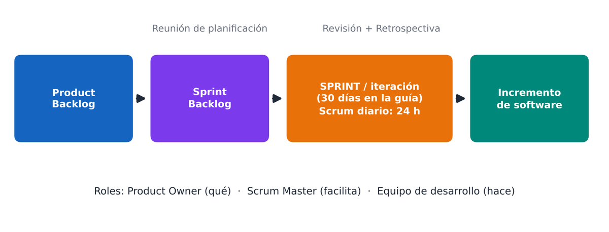
Flujo de Scrum.
El término viene del rugby (Takeuchi y Nonaka, 1986); Schwaber y Sutherland lo presentaron en OOPSLA '95.
Enfoque empírico: acepta que el problema no puede entenderse del todo al principio.
Reuniones: Scrum diario (estado del proyecto), planificación de iteración, revisión y retrospectiva.
4. Otras metodologías y prácticas ágiles
UD2: Metodologías tradicionales y ágiles
Nombre
Idea clave
XP (Extreme Programming)
Pruebas unitarias (¿hago lo que quise decir?) y de aceptación (¿era lo que debía?); simplicidad y retroalimentación
DSDM
Método ágil de desarrollo de sistemas dinámicos; factores críticos de éxito
Crystal Clear, AUP
Otros métodos ágiles (AUP = Proceso Unificado Ágil)
TDD
Desarrollo guiado por pruebas: primero la prueba, luego el código
Integración continua
Integrar y probar el código en el repositorio con mucha frecuencia
Pair programming
Dos programadores comparten un puesto: uno escribe, otro revisa
Ojo:RAD (Rapid Application Development) y RUP son iterativos e incrementales. La idea básica: desarrollar en ciclos, aprendiendo de cada versión.
Autotest UD2
UD3
Paradigma orientado a objetos
Abstracción, características de un lenguaje OO (Alan Kay), características opcionales, historia y metas de calidad (Meyer).
Abstracción: supresión intencionada de algunos detalles de un proceso o artefacto para destacar otros aspectos. Es una técnica para comprender y manejar sistemas complejos (ejemplo: las escalas de un mapa).
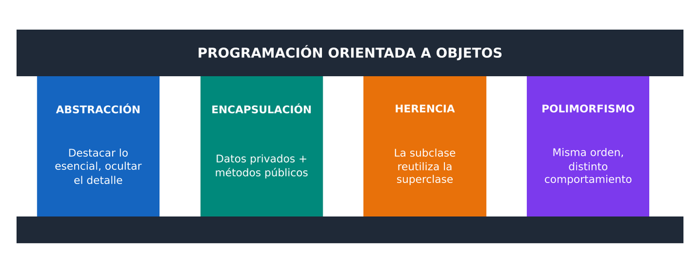
Pilares de la POO.
Las 6 características básicas de un LOO (Alan Kay, 1993)
UD3: Paradigma orientado a objetos
#
Característica
1
Todo es un objeto
2
Cada objeto tiene su propia memoria, formada a partir de otros objetos
3
Todo objeto es instancia de una clase
4
Los objetos de la misma clase reciben los mismos mensajes; la clase define comportamiento y estructura
5
Las clases se organizan en un árbol de raíz única: la jerarquía de herencia
6
Un programa es un conjunto de objetos que se comunican mediante mensajes
Características opcionales
UD3: Paradigma orientado a objetos
Característica
Significado
Tipado estático
Se impone el tipo del objeto en compilación → menos errores en ejecución
Recogida de basura
Libera automáticamente la memoria de objetos que ya no se usan
Concurrencia
Varios objetos actúan a la vez (hilos)
Persistencia
La existencia del objeto trasciende en el tiempo (suele usar una BD)
Reflexión
El programa manipula su propio estado, estructura y comportamiento
Idea clave:Orientación a objetos no es booleana: un lenguaje puede ser «más OO» que otro.
Metas de la POO: calidad (Bertrand Meyer)
UD3: Paradigma orientado a objetos
Parámetros
Incluye
Se consigue con
Extrínsecos
Fiabilidad = corrección + robustez
Tipado estático, aserciones, memoria automática, manejo disciplinado de excepciones
Intrínsecos
Modularidad = extensibilidad + reutilización
Diseño simple, componentes autocontenidos
Corrección: hace con exactitud lo que dice la especificación. Robustez: reacciona bien ante condiciones excepcionales (fuera de la especificación). Meta final: mejorar la calidad y la mantenibilidad.
Diferencias entre paradigmas y repaso del modelo entidad-relación (entidades débiles y especialización).
UD4: Programación estructurada vs. POO y modelo E-R
ESTRUCTURADA
ORIENTADA A OBJETOS
Unidad
La función
La clase
Enfoque
Orientada a acciones; de lo general a lo particular
Encapsula datos y procedimientos en objetos relacionados
Lectura
Se puede leer en secuencia (arriba → abajo)
Más compacta pero más lenta de comprender
Ventajas
Sencilla de codificar y de seguir los fallos
Reutilización, mantenimiento más fácil, nuevos tipos a partir de los existentes
Estructuras de control:secuencial (una tras otra) · selectiva (IF) · repetitiva (mientras se cumpla una condición).
Modelo E-R (documento de apoyo)
Entidad débil: no tiene clave primaria propia; relación N:1 con la fuerte; su PK = PK de la fuerte + discriminante (clave parcial). Se dibuja con línea doble.
Especialización (arriba→abajo) y generalización (abajo→arriba).
Paso a tablas: entidad fuerte → tabla; N:M → tabla propia con las dos claves; N:1 → clave ajena del lado N; 1:1 → clave en una de ellas; atributos compuestos → atómicos; multivaluados → otra tabla.
Ejemplo:Biblioteca: LIBRO (ISBN, título…) · EJEMPLAR (cod_ejemplar, precio, ocupado) · PIDE_PRESTADO (cod_ejemplar, num_socio, fecha_inicio, fecha_entrega) → ejemplo clásico de N:M convertida en tabla.
Autotest UD4
UD5
Gestión de memoria y recolector de basura (J2ME)
Cómo gestiona la memoria una máquina virtual con recursos limitados.
En sistemas móviles la memoria es limitada, así que la ocupación de la máquina virtual debe ser mínima y las tareas de gestión muy rápidas.
UD5: Gestión de memoria y recolector de basura (J2ME)
Tema
Contenido
Gestión manual
El programador reserva y libera memoria (riesgo de fugas y punteros colgantes)
Gestión automática
El sistema libera memoria no usada (recolector de basura)
Ubicador de memoria (allocator)
Reserva de memoria: First Fit, Buddy System, Suballocators
Recolectores de traza
Mark-Sweep, Copying, Incremental, Conservative
Contadores de referencias
Simple, diferido, de 1 bit…
Idea clave:Mark-Sweep: se marcan los objetos alcanzables desde las variables del programa (raíces y derivados) y se barren (liberan) los no marcados; después puede compactarse el heap. En la KVM: markRootObjects → markNonRootObjects → sweepTheHeap → compactTheHeap.
Entorno de desarrollo
NetBeans es un IDE (entorno de desarrollo integrado) que no solo sirve para Java. Para empezar se necesita JDK (con las variables JAVA_HOME / PATH), NetBeans y, para las prácticas con base de datos, MySQL.
Autotest UD5
UF2405Modelo de programación web y bases de datos
Cómo se construye una aplicación web de varias capas y cómo habla con una base de datos relacional: arquitectura, presentación, diseño relacional, acceso (JDBC/ODBC) y SQL (DDL y DML).
UD1
Introducción al desarrollo de aplicaciones web
Qué es una aplicación web, quién habla con quién (cliente, servidor web, servidor de aplicaciones, servidor de datos) y con qué protocolos y lenguajes.
1. Qué es una aplicación web
Idea clave:Aplicación web = software que el usuario utiliza a través de un navegador, accediendo a un servidor web. Es independiente del sistema operativo, fácil de mantener (no se instala nada en cada PC) y usa un cliente ligero.
La web se apoya en tres pautas: cómo se transfiere la información (HTTP), cómo se describe (HTML) y cómo se localiza (URL).
Funciones del navegador (browser): construir y enviar la petición HTTP, recibir/interpretar/mostrar la respuesta, caché local y gestión de cookies.
2. Arquitectura cliente/servidor
UD1: Introducción al desarrollo de aplicaciones web
Elemento
Qué hace
Ejemplo
Cliente ligero
Solo presentación; no soporta la lógica de la aplicación
Navegador web
Servidor web
Aloja sitios y aplicaciones; atiende peticiones HTTP las 24 h
Apache, IIS
Servidor de aplicaciones
Ejecuta la lógica de negocio (servidores web de nueva generación)
Tomcat, J2EE
Servidor de datos / archivos
Almacena y comparte datos o archivos; gestiona la BD
SGBD relacional
Idea clave: Lo más importante de una aplicación web: que el cliente haga pocas tareas. El servidor almacena datos, aplica reglas de negocio y genera el HTML.
Tipos de arquitectura: monocapa · cliente/servidor de 2 capas · de 3 capas (presentación + lógica + datos) · n capas. En 3 capas se separa lógica de negocio y datos, pero no es obligatoria la separación física.
3. Otros servidores (documento de apoyo)
UD1: Introducción al desarrollo de aplicaciones web
Servidor
Función
Archivos
Almacena y distribuye ficheros por la red de la organización
Impresión
Controla impresoras remotas; cola por orden de llegada o importancia
Correo
Envía correos entre usuarios dentro y fuera de la red
Fax / Telefonía
Transmite, recibe y distribuye faxes / gestiona la telefonía de la red
4. Protocolos: modelo TCP/IP
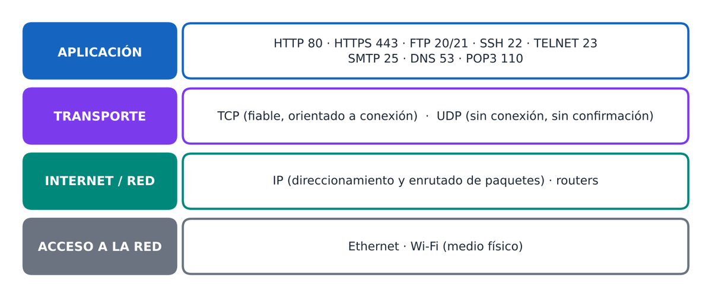
Capas TCP/IP con los protocolos y puertos más repetidos.
UD1: Introducción al desarrollo de aplicaciones web
Protocolo
Para qué sirve
Detalle de examen
HTTP
Transmitir documentos web
Protocolo por defecto de la web; sin estado (no guarda conexiones)
FTP
Transferencia de archivos
Puerto 20 datos · 21 control
DNS
Traducir nombres de dominio a IP
Nombres ↔ direcciones IP
TELNET
Sesión de trabajo en un ordenador remoto
Terminal remoto
SMTP / POP
Enviar (SMTP) / recibir (POP) correo
Dos protocolos complementarios
IP
Direccionamiento y envío de paquetes
No orientado a conexión
TCP
Transporte fiable de datos
Orientado a conexión, fiable
UDP
Transporte rápido sin garantías
No orientado a conexión; paquetes sin pedir conexión
Truco:TCP = Teléfono (marcas, conectas, hablas, confirmas) · UDP = Buzón (echas la carta y no esperas respuesta).
5. Tecnologías y lenguajes web
UD1: Introducción al desarrollo de aplicaciones web
Rol
Tecnología
Idea clave
Estructura
HTML / XHTML
Lenguaje de marcas; ficheros .htm / .html; estático
Presentación
CSS
Hojas de estilo en cascada
Cliente dinámico
JavaScript, AJAX
Scripts en el navegador; AJAX = interacción sin recargar la página
Acceso al documento
DOM
API estándar (W3C) para acceder y cambiar el contenido del documento
Una de las primeras tecnologías de contenido dinámico
Plataformas
J2EE / Microsoft
Servidores de aplicaciones basados en J2EE o en la plataforma Microsoft completa
6. Componentes orientados a objetos
Cuatro pilares de la POO.
Un objeto tiene estado (atributos), comportamiento (métodos) e identidad. Una clase es la plantilla de un grupo de objetos. Relaciones entre clases: generalización/especialización (superclases y subclases), agregación (objeto compuesto de otros) y asociación (conexión con cardinalidad). El manual cita como propiedades: abstracción, encapsulación, jerarquía y modularidad.
Autotest UD1
UD2
Arquitectura multicapa (N-tier)
Separar presentación, lógica de negocio y datos: por qué, cómo y con qué patrón (MVC).
1. Del cliente/servidor a n capas
El modelo cliente/servidor (años 80): el cliente solicita servicios y el servidor los presta y centraliza recursos. Evoluciona a la arquitectura de dos niveles, a la de tres capas y a n capas (con más servidores: chat, correo…). En sistemas distribuidos el middleware actúa de intermediario entre cliente y servidor y se ejecuta en ambas partes.
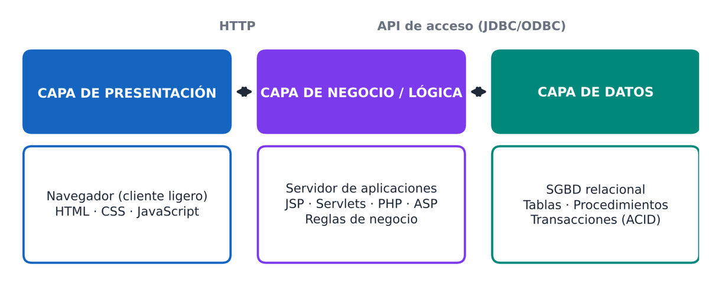
Modelo de tres capas en una aplicación web.
UD2: Arquitectura multicapa (N-tier)
Capa
Responsabilidad
Claves
Presentación
Interfaz de usuario; cómo se presenta la aplicación
Solo presenta y maneja datos con objetos de la capa de negocio
Lógica de negocio
Enlace usuario ↔ BD; reglas de negocio; procesa peticiones
Capa intermedia, reutilizable; aísla presentación y datos
Datos
Almacenamiento y acceso a los datos
SGBD, ficheros
Idea clave: El reparto de procesos entre capas se llama procesamiento distribuido. El objetivo del modelo en capas es repartir responsabilidades de forma jerárquica y separarlas con seguridad.
2. Propiedades de una buena aplicación multicapa
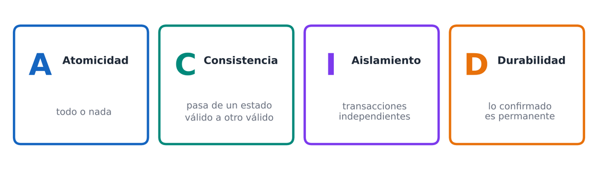
Propiedades ACID de toda aplicación transaccional.
Además de transaccional (ACID), debe ser escalable: poder crecer en volumen de carga sin tener que rediseñarse.
3. Patrón Modelo-Vista-Controlador
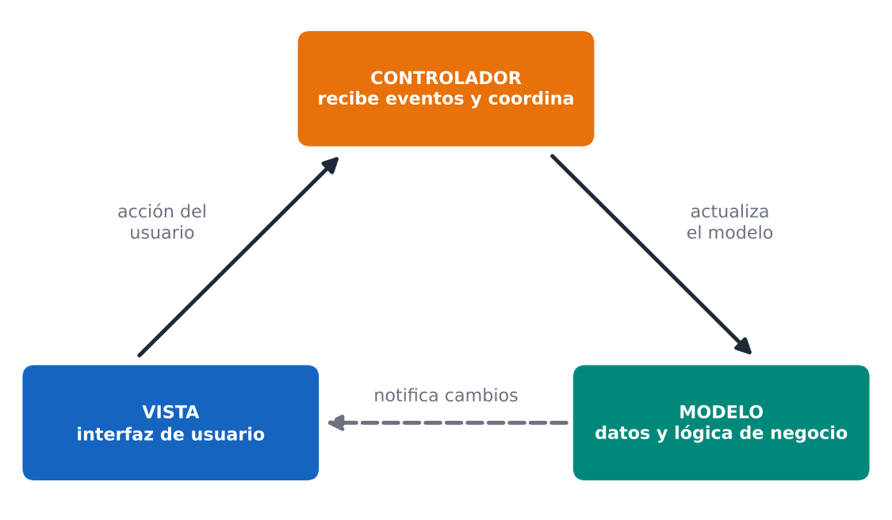
MVC separa interfaz gráfica y código de programación.
Truco:Modelo = Mis datos · Vista = lo que Veo · Controlador = el que Coordina.
4. Lógica de negocio
Las reglas de negocio cambian con más frecuencia que las tareas que soportan → se encapsulan en componentes.
Lo habitual: componentes orientados a objetos sin código de interfaz ni de acceso a datos.
Dos formas de organizar la lógica: diseño procedimental o diseño orientado a objetos (datos + comportamiento).
Separar en capas lógicas da flexibilidad de ubicación física: la lógica puede ejecutarse en un servidor de aplicaciones.
Ojo: No confundas capa (separación lógica) con nivel/tier (separación física). Tres capas no implican tres máquinas.
Autotest UD2
UD3
La capa de presentación
HTML, DHTML, lenguajes de script y la diferencia entre lenguajes de cliente y de servidor.
La capa de presentación se ocupa del formato: cómo se visualiza la información. Su base es HTML (HyperText Markup Language), lenguaje de etiquetas<...> heredadas de SGML. Se necesitan dos herramientas: un editor HTML y un navegador.
Encabezamiento: define valores para todo el documento
<p>, <pre>
Párrafo · texto preformateado
Listas
Numeradas, no numeradas y de definición
<a name> / <a href>
Destino de un vínculo / enlace al destino
HTML dinámico (DHTML)
Conjunto de técnicas para dar control absoluto al diseñador sobre la página: hojas de estilo en cascada (CSS), control de la colocación de objetos y el modelo dinámico de objetos, núcleo de DHTML que permite scripts, cambios de estilo y atributos.
Lado cliente vs. lado servidor
UD3: La capa de presentación
Lado CLIENTE
Lado SERVIDOR
Se ejecuta en
El navegador (no hay que transformar los datos)
El servidor, que envía al cliente el resultado ya procesado
JavaScript: scripts dentro del HTML, basado en objetos. Applet: programa Java dentro de la página, más difícil que JS pero independiente de navegador y SO
JSP: Java, requiere contenedor de servlets (Apache Tomcat). PHP: código abierto, incrustado en HTML. ASP: Microsoft, requiere IIS
Ojo:VBScript solo es compatible con Internet Explorer; está basado en Visual Basic y es muy parecido a JavaScript. Un script es un pequeño programa incluido en el HTML; su ejecución se dispara con un evento.
Truco: ¿Cliente o servidor? Si el usuario puede ver el código en «Ver código fuente» → cliente. Si solo recibe HTML resultante → servidor (PHP, JSP, ASP).
Autotest UD3
UD4
Diseño de bases de datos relacionales
Terminología relacional, claves, restricciones, modelo entidad-relación y su paso a tablas.
1. Evolución de los modelos
Jerárquico (niveles entre campos) → Red (más de una conexión entre niveles) → Relacional (tablas, el más utilizado) → modelos basados en objetos. El modelo relacional resuelve la repetición de datos entre tablas.
2. Terminología relacional
UD4: Diseño de bases de datos relacionales
Teoría
En la práctica
Detalle
Relación
Tabla
Conjunto de filas con valores atómicos (indivisibles)
Tupla
Fila / registro
Cada fila de la tabla
Atributo
Columna
Nombre único dentro de la tabla
Grado
Nº de columnas
Número de atributos de la relación
Dominio
Valores posibles
Valores permitidos de un atributo
NULL
Valor desconocido
Evitarlo en lo posible: provoca errores al manipular datos
3. Claves y restricciones
UD4: Diseño de bases de datos relacionales
Concepto
Definición
Clave candidata
Conjunto de atributos que podrían identificar cada tupla
Clave primaria (PK)
La candidata elegida; no se repite y no admite nulos
Clave foránea / ajena (FK)
Clave primaria de otra relación, propagada como referencia
Integridad de entidad
Ninguna PK puede tomar valor nulo
Integridad referencial
Una FK debe referirse a una tupla que exista en la otra relación
Restricción de dominio / clave
Valores atómicos · no puede haber tuplas repetidas
Truco:PK = Pasaporte único (identifica y nunca vacío) · FK = Fichaje en otra tabla (apunta a algo que ya existe).
4. Modelo entidad-relación (E-R)
UD4: Diseño de bases de datos relacionales
Elemento
Representación
Notas
Entidad fuerte
Rectángulo (nombre en MAYÚSCULAS)
Se identifica por sus propios atributos clave
Entidad débil
Rectángulo dentro de otro
Depende de una fuerte; relación N:1; PK = PK de la fuerte + discriminante
Atributo
Elipse (minúsculas)
El subrayado marca la clave primaria
Relación
Rombo
Grado = nº de entidades que participan
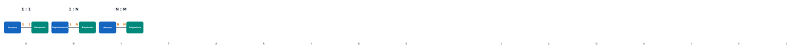
Cardinalidades y cómo se transforman al modelo relacional.
Idea clave:Generalización/especialización: la superclase reúne atributos comunes y las subclases los heredan (herencia de propiedades). Se puede pasar a tablas de dos formas: (1) una tabla para la entidad de nivel superior + una por subclase con la clave, o (2) una tabla por entidad con todos sus atributos locales.
5. Reglas de transformación E-R → relacional
UD4: Diseño de bases de datos relacionales
Elemento E-R
Resultado en tablas
Entidad
Una tabla con sus atributos; la PK es el atributo identificador
Relación 1:N
No crea tabla: se añade la clave ajena en el lado N
Relación 1:1
La PK de una entidad pasa como clave ajena a la otra
Relación N:M
Se transforma en una nueva tabla con las PK de ambas entidades como clave primaria
Relación recursiva / ternaria
Se trata de forma similar a N:M (la ternaria N:1:1 usa la PK del lado N)
Atributos compuestos / multivaluados
Se descomponen en atómicos; los multivaluados dan lugar a otra tabla
6. Normalización exprés
UD4: Diseño de bases de datos relacionales
Forma normal
Exige
1FN
Todos los atributos atómicos (sin grupos repetidos)
2FN
1FN + cada atributo no clave depende de toda la clave (sin dependencias parciales)
3FN
2FN + ningún atributo no clave depende de otro no clave (sin dependencias transitivas)
Ejemplo:Del objeto a la tabla: clase → tabla · objeto → fila · atributo → columna · herencia → una de las estrategias del punto 4.
Autotest UD4
UD5
Acceso a bases de datos relacionales: capa de acceso a datos
APIs y drivers (ODBC, JDBC…), seguridad, sentencias de consulta, procedimientos almacenados y transacciones.
1. Niveles ANSI/SPARC
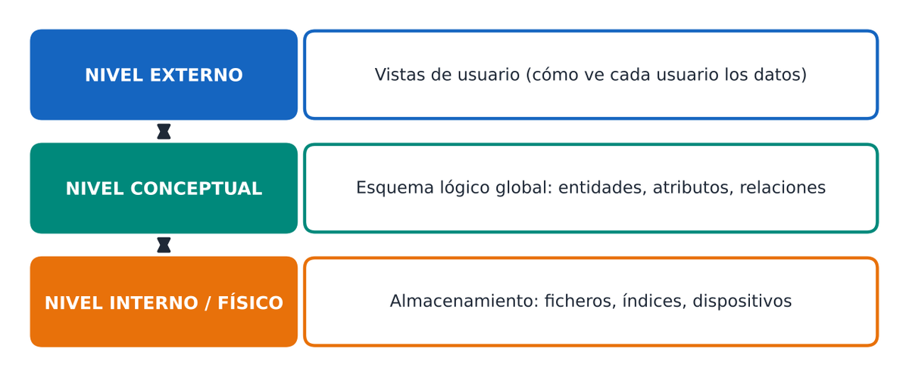
Tres niveles de descripción de una base de datos.
2. APIs, drivers y conectividad
UD5: Acceso a bases de datos relacionales: capa de acceso a datos
Tecnología
Qué es
API
Conjunto de funciones/procedimientos de una biblioteca, usable por otro software como capa de abstracción
CGI
Interfaz de pasarela común: permite al servidor web comunicarse con programas o scripts externos
ISAPI
Más rápida que CGI; integrada en el servidor (IIS)
ODBC
Open DataBase Connectivity: estándar de acceso a BD
JDBC
Java DataBase Connectivity: conectividad Java ↔ SGBD; inspirado en ODBC
OLE DB / ADO
Tecnologías Microsoft para acceder a distintos orígenes de datos
Middleware
Intermediario entre cliente y servidor
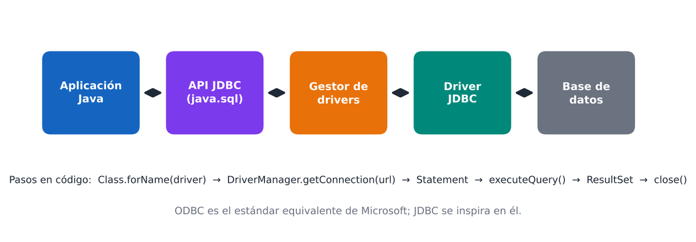
Cadena de conexión JDBC y pasos de código.
UD5: Acceso a bases de datos relacionales: capa de acceso a datos
Tipo de driver JDBC
Idea
Puente JDBC-ODBC
Traduce JDBC a llamadas ODBC
Java parcialmente nativo (Java/binario)
Usa librerías nativas del SGBD
Java nativo – red (middleware)
Se comunica con un servidor intermedio
Java nativo JDBC – independiente
100 % Java, habla directo con la BD
JDBC admite acceso en dos capas (aplicación ↔ BD directamente) y en tres capas (aplicación ↔ capa intermedia ↔ BD).
3. Seguridad: usuarios y permisos
GRANTSELECT, INSERTON empleados TO usuario1; -- concede permisosREVOKEINSERTON empleados FROM usuario1; -- retira permisos
El administrador de la BD concede permisos. Se accede con un inicio de sesión (de Windows o de SQL con usuario y contraseña) al que se asigna permiso sobre la BD.
4. Sentencia SELECT y formas de usar SQL
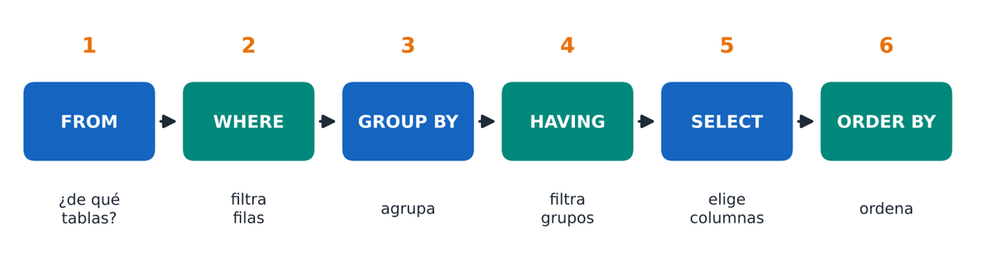
Orden lógico de evaluación de una consulta.
ALL devuelve todas las filas · DISTINCT elimina duplicados · * = todas las columnas.
INTO crea una tabla nueva con el resultado · GROUP BY agrupa · UNION combina resultados de varias consultas.
Conjunto de instrucciones SQL guardadas en el servidor que definen un proceso. Del sistema: en la base Master, prefijo sp_. De usuario: locales o temporales. Sirven para lógica condicional, cálculos complejos y validación, y se ejecutan con EXEC.
6. Transacciones
BEGINTRANSACTION;
UPDATE cuentas SET saldo = saldo - 100WHERE id = 1;
UPDATE cuentas SET saldo = saldo + 100WHERE id = 2;
COMMITTRANSACTION; -- confirma todo-- ROLLBACK TRANSACTION; -- deshace todo
Idea clave:COMMIT = guardar definitivamente · ROLLBACK = deshacer. En una transacción distribuida (varios servidores a la vez) la atomicidad exige que todos confirmen o todos deshagan.
Autotest UD5
UD6
Lenguajes de definición de datos (DDL)
CREATE, ALTER, DROP y TRUNCATE sobre bases de datos, tablas, vistas, triggers y procedimientos.
SQL está estandarizado por ANSI/ISO (la versión de referencia del manual es SQL-92). Se compone de sentencias, cláusulas, operadores y funciones agregadas. Sus grandes bloques: DDL (define estructura) y DML (manipula datos).
UD6: Lenguajes de definición de datos (DDL)
Sentencia
Acción
Aplica a
CREATE
Crea objetos
Bases de datos, tablas, vistas, dominios, procedimientos, triggers
ALTER
Modifica objetos
Los mismos objetos (p. ej. añadir/quitar columnas)
DROP
Elimina el objeto entero
Bases de datos, tablas, vistas, triggers, procedimientos
TRUNCATE
Vacía todas las filas de una tabla
Tablas
Crear una tabla con restricciones
CREATETABLE empleado (
dni CHARACTER VARYING(9) PRIMARYKEY,
nombre CHARACTER VARYING(40) NOTNULL,
sueldo DECIMAL(8,2) DEFAULT1000 CHECK (sueldo > 0),
email CHARACTER VARYING(60) UNIQUE,
cod_dep INTEGER,
FOREIGNKEY (cod_dep) REFERENCES departamento (cod_dep)
);
UD6: Lenguajes de definición de datos (DDL)
Restricción
Efecto
PRIMARY KEY
Identifica la fila; única y no nula
FOREIGN KEY … REFERENCES
Integridad referencial con otra tabla
UNIQUE
Evita valores duplicados en columnas que no son la clave primaria
NOT NULL
Prohíbe valores nulos
DEFAULT
Valor por defecto al crear la columna
CHECK
Control de validación del valor introducido
Vistas, triggers y procedimientos
Vista: tabla virtual derivada de otras (pertenece al esquema externo); una modificación a través de ella solo afecta a una de las tablas originales.
Trigger (disparador): procedimiento almacenado especial que se ejecuta automáticamente ante un evento. Tipos: DDL y DML. Se define BEFORE o AFTER del evento; OLD / NEW solo en triggers definidos por filas.
Procedimiento almacenado: bloque de SQL guardado en el servidor.
DROP vs. TRUNCATE vs. DELETE
UD6: Lenguajes de definición de datos (DDL)
DELETE
TRUNCATE
DROP
Lenguaje
DML
DDL (según el manual)
DDL
Qué quita
Filas (con o sin WHERE)
Todas las filas
La tabla entera (estructura incluida)
Velocidad
Registra cada eliminación
Más rápido
—
Estructura
Se mantiene
Se mantiene
Desaparece
Ojo:TRUNCATE casi siempre es más rápido que un DELETE sin condiciones, porque DELETE registra cada fila eliminada.
Los lenguajes de cuarta generación (4GL) son no procedurales y orientados a un objetivo concreto (generadores de informes, de CRUD, etc.).
Autotest UD6
UD7
Manipulación de los datos (DML)
SELECT, INSERT, UPDATE, DELETE, JOIN, UNION y subconsultas.
SELECT e.nombre, d.nombre AS departamento, SUM(e.sueldo) AS total
FROM empleado e
INNERJOIN departamento d ON e.cod_dep = d.cod_dep
WHERE e.sueldo > 1000GROUPBY e.nombre, d.nombre
HAVINGSUM(e.sueldo) > 2000ORDERBY total DESC;
UD7: Manipulación de los datos (DML)
Sentencia
Sintaxis básica
Nota clave
SELECT
SELECT cols FROM tabla [WHERE …]
Consulta; cláusulas WHERE, GROUP BY, HAVING, ORDER BY
INSERT
INSERT INTO t (cols) VALUES (valores);
Individual o múltiple (también con SELECT); columnas omitidas → NULL
UPDATE
UPDATE t SET col = valor WHERE …
Solo una tabla a la vez; cuidado con la integridad de la PK
DELETE
DELETE FROM t WHERE …
Solo de una tabla; si es una vista, también se borra en la tabla
Funciones agregadas:SUM, AVG, COUNT, MAX, MIN. Operadores de comparación (=, <>, <, >…), lógicos (AND, OR, NOT) y aritméticos.
Combinaciones de tablas
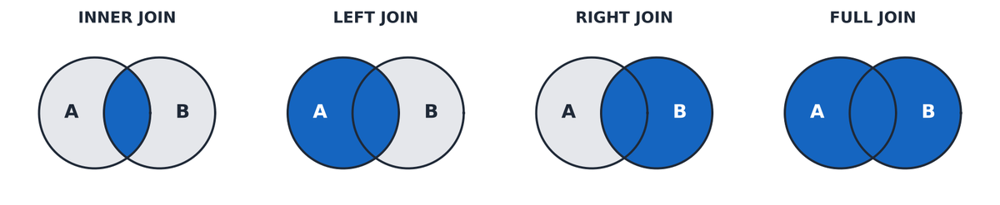
INNER, LEFT, RIGHT y FULL JOIN.
INNER JOIN (combinación interna): solo las filas con coincidencia en ambas tablas.
LEFT / RIGHT JOIN (combinación externa): todas las filas de la tabla izquierda / derecha; si no hay pareja, las columnas aparecen como NULL.
UNION: mezcla en un solo conjunto los resultados de dos o más consultas.
Subconsultas
Una subconsulta es un SELECT dentro de otro SELECT. Puede devolver una fila y una columna, varias filas y una columna, o varias filas y columnas. Se usan operadores de comparación simples (=, <>) o de conjunto (IN, ANY, ALL, EXISTS).
SELECT nombre FROM empleado
WHERE sueldo > (SELECTAVG(sueldo) FROM empleado);
Truco:WHERE filtra filas antes de agrupar · HAVING filtra grupos después de agrupar.
Autotest UD7
UF2406El ciclo de vida del desarrollo de aplicaciones
Todo el recorrido de un proyecto: modelos de ciclo de vida y metodologías, estimación y planificación, UML, interfaces gráficas, calidad, pruebas, excepciones y documentación.
UD1
Proceso de ingeniería del software
Fases, modelos de ciclo de vida, requisitos y trazabilidad, metodologías orientadas a objetos y herramientas CASE.
1. Fases del proceso
La Ingeniería del Software surgió ante la «crisis del software» (costes y plazos muy superiores a lo previsto). Las fases clásicas son:
UD1: Proceso de ingeniería del software
Fase
Qué se hace
1. Especificación
Qué debe hacer el sistema (requisitos)
2. Diseño
Cómo lo hará: arquitectura y diseño detallado
3. Construcción + pruebas unitarias
Programar y probar cada módulo
4. Validación
Comprobar que cumple lo pedido
5. Implantación
Puesta en marcha / entrega al cliente
6. Mantenimiento
Tras la entrega: que siga funcionando y se adapte
2. Modelos de ciclo de vida
Cascada y modelo en V.
UD1: Proceso de ingeniería del software
Modelo
Idea
Ventaja
Inconveniente
Cascada
Fases secuenciales; la salida de una es la entrada de la siguiente
Simple, bien documentado
Rígido; el cliente ve el producto al final
Cascada con realimentación / sashimi
Permite solapar fases
Menos documentación; vuelta atrás
Control más difícil
Incremental / evolutivo (prototipos)
Entregas parciales; se refina con la reacción del usuario
Resultados tempranos
Arquitectura puede degradarse
Espiral
Iteraciones guiadas por el análisis de riesgos
Gestiona riesgos
Complejo, requiere experiencia
Modelo en espiral (Boehm): cuatro cuadrantes por vuelta.
3. Requisitos y trazabilidad
El cliente rara vez sabe al principio qué quiere → técnicas de captura: entrevistas, entrevistas JAD (muy estructuradas, con participantes de todos los niveles), prototipos y casos de uso.
Casos de uso: introducidos por Jacobson en 1992; describen la interacción del usuario con el sistema.
Trazabilidad: conocer en todo momento por qué fases y procesos ha pasado cada elemento, de modo que cualquier problema pueda rastrearse hasta su origen. Relación principal entre requisitos: satisfacción.
4. Metodologías orientadas a objetos
UD1: Proceso de ingeniería del software
Metodología
Rasgo clave
Coad y Yourdon
Considerada de las más sencillas de aprender en análisis OO
Proceso Unificado / UML
De «los tres amigos»: Jacobson, Booch y Rumbaugh
MÉTRICA v3 (España)
Metodología oficial de la Administración española. Procesos: PSI (planificación) · desarrollo: EVS, ASI, DSI, CSI, IAS · MSI (mantenimiento). Interfaces: GC, GP, CAL, SEG
Merise
Administración francesa; comienza con el esquema director
SSADM
Administración del Reino Unido (fases llamadas módulos)
Truco:MÉTRICA v3 — «Pepe Es A Dos Cervezas Ilusionado»: PSI → EVS → ASI → DSI → CSI → IAS; MSI para mantener.
Ventajas de lo OO: está basado en componentes (más reutilización); su base son encapsulación, herencia y polimorfismo. La subclase hereda atributos y operaciones de su superclase.
5. Herramientas CASE
UD1: Proceso de ingeniería del software
Tipo
Apoya…
Upper CASE
Planificación, análisis de requisitos y estrategia
Lower CASE
Diseño detallado, codificación, pruebas y mantenimiento
I-CASE (integradas)
Todo el ciclo, mediante un repositorio común (base de datos del proyecto) cuyo metamodelo define cómo se guarda la información
IDE: programa único con editor, compilador y depurador. 4GL / programación visual: baratos y rápidos de usar.
Pruebas automatizadas: funciones de grabación/reproducción y marcos de pruebas; bajo coste de mantenimiento.
Gestión de configuración (CVS, 1986, Dick Grune): varios desarrolladores trabajan en su copia de trabajo y envían cambios al repositorio; admite ramas.
Documentar puede costar entre un 20 y un 30 % del esfuerzo de desarrollo.
Autotest UD1
UD2
Planificación y seguimiento
Estimar esfuerzo (COCOMO, puntos de función), planificar (WBS, PERT, Gantt) y hacer seguimiento.
1. Estimación
UD2: Planificación y seguimiento
Técnica
Qué es
Dato clave
COCOMO
Modelo constructivo de costes (B. W. Boehm, finales de los 70). Tres submodelos: básico, intermedio y detallado
Modos: orgánico, semiacoplado, empotrado
Puntos de función
Mide el tamaño funcional desde el punto de vista del usuario
Allan Albrecht, IBM, 1979
MK II
Variante de puntos de función
Norma ISO/IEC 20968
COSMIC
Cuenta movimientos de datos (entradas, salidas, lecturas, escrituras) de los procesos funcionales
Consorcio creado en 1998
SLIM (Putnam)
Modelo de gestión del ciclo de vida del software
Artículo original de Putnam: 1978
Delphi
Consenso de expertos mediante cuestionarios iterativos y anónimos
Mini-Delphi cara a cara: Estimation-Talk-Estimation
UD2: Planificación y seguimiento
Modo COCOMO
Proyecto típico
Orgánico
Equipo pequeño de programadores experimentados en entorno familiar
Semiacoplado
Equipo mixto; complejidad y experiencia intermedias
Empotrado
Fuertes restricciones de hardware/entorno; el más rígido
Idea clave: Fórmulas COCOMO básico: Esfuerzo E = a · (KLOC)^b (persona-mes) y Duración D = c · E^d. Coeficientes del orgánico: a = 2,4 · b = 1,05 · c = 2,5 · d = 0,38. Compruébalos contra la tabla de tu manual (semiacoplado: a = 3,0, b = 1,12; empotrado: a = 3,6, b = 1,20).
2. Planificación
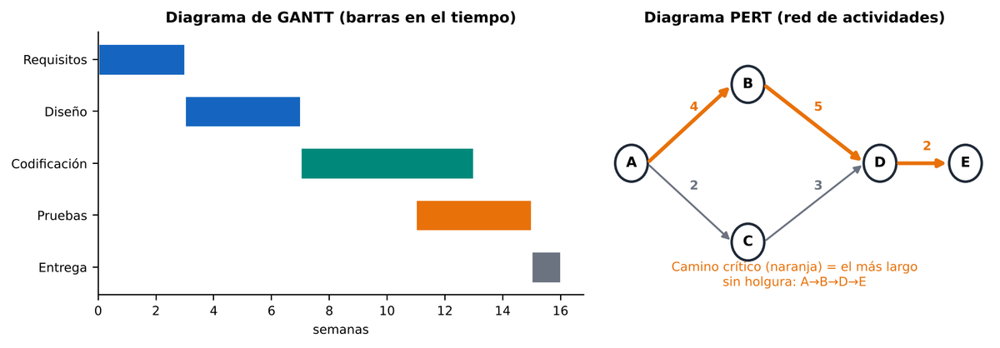
Gantt (calendario) y PERT (dependencias y camino crítico).
UD2: Planificación y seguimiento
Herramienta
Qué muestra
WBS / EDT
Descomposición jerárquica del trabajo; el primer nivel es el objetivo principal del proyecto
PBS
Descomposición del producto; junto con la WBS da las dependencias para PERT
PERT
Red de actividades (años 50); calcula el camino crítico y la holgura total
Gantt
Barras de tareas sobre una escala temporal
Nivelación de recursos
Evita retrasos por cuellos de botella de recursos
Idea clave:Camino crítico = ruta más larga: sus actividades no tienen holgura, cualquier retraso retrasa el proyecto. Puede haber varias rutas críticas paralelas.
3. Seguimiento
Combinar recopilar información + acciones correctivas + gestión de los cambios, no solo rellenar formularios.
Reunión stand-up: se hace de pie para que sea breve.
Informes: deben ser eficaces y centrarse en los aspectos más sobresalientes del proceso de gestión.
Autotest UD2
UD3
Diagramado (UML)
Familias de diagramas UML y cómo se leen: clases, casos de uso, secuencia, componentes y despliegue.
UML nació de «los tres amigos»: Grady Booch, Ivar Jacobson y James Rumbaugh. Es un lenguaje de modelado (no una metodología). Un diagrama UML no es un documento completo: se complementa con texto.
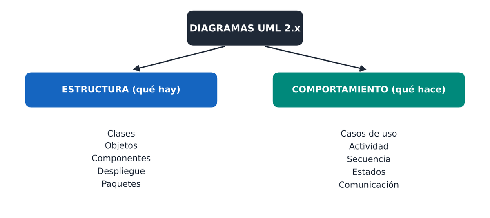
Los diagramas UML 2.x se agrupan en estructura y comportamiento.
Idea clave: UML 2.x define 14 diagramas: 7 de estructura (clases, objetos, componentes, estructura compuesta, despliegue, paquetes, perfiles) y 7 de comportamiento (casos de uso, actividad, máquina de estados y 4 de interacción: secuencia, comunicación, tiempos y visión global).
Diagrama de clases
Una clase se dibuja como caja con 3 compartimentos: nombre · atributos · operaciones. Visibilidad:+ público · - privado · # protegido · ~ paquete. Multiplicidad:1, 0..1, *, 1..*.
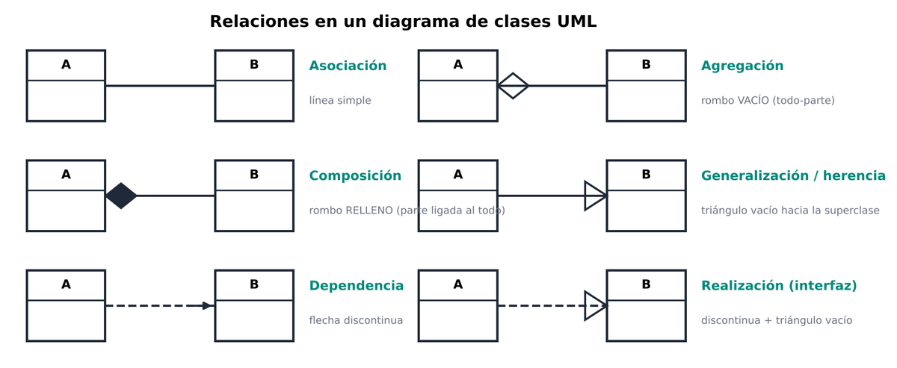
Notación de las relaciones.
Ojo: Una interfaz solo declara: no se puede instanciar; la implementa un clasificador (relación de realización). Una clase puede implementar varias interfaces.
Diagrama de casos de uso
UD3: Diagramado (UML)
Elemento
Detalle
Actor
Rol externo que interactúa; se nombra por el rol que asume
Caso de uso
Funcionalidad del sistema vista desde un usuario externo
«include»
Flecha discontinua del caso base al incluido: comportamiento obligatorio reutilizado
«extend»
Comportamiento opcional o condicional que amplía el caso base (con puntos de extensión)
Diagrama de secuencia
Muestra líneas de vida de los objetos y el orden temporal de los mensajes (el tiempo avanza hacia abajo).
Tipos de mensaje: síncrono, asíncrono, crear, eliminar, respuesta.
El mensaje crear apunta a la caja del objeto; eliminar termina la línea de vida.
Componentes y despliegue
Componente: unidad con interfaces provistas y requeridas; puede estar formado por uno o más artefactos. Diagrama de despliegue: muestra la configuración física (nodos y artefactos); sirve, p. ej., para comparar despliegues en desarrollo, preproducción y producción.
Truco:Estructura = FOTO (cómo está montado) · Comportamiento = PELÍCULA (qué ocurre y en qué orden).
Autotest UD3
UD4
Desarrollo de la GUI
Componentes gráficos en Java (AWT, Swing), gestión de eventos y principios de usabilidad.
UD4: Desarrollo de la GUI
AWT
Swing
Idea
Primeras bibliotecas gráficas de Java
Evolución: amplía las posibilidades de AWT con una gama muy alta de funciones
Apariencia
Poco flexible
Apariencia y comportamiento adaptables (arquitectura de componentes)
Modelo de eventos
Idea clave: En Java, un evento es un objeto; el componente (fuente) lo envía a un objeto oyente (listener) registrado con addActionListener, que lo gestiona en su método actionPerformed.
JButton boton = newJButton("Aceptar");
boton.addActionListener(newActionListener() {
publicvoid actionPerformed(ActionEvent e) {
String texto = e.getActionCommand(); // etiqueta del botónObject origen = e.getSource(); // quién generó el evento
}
});
marco.add(boton); // añadir al contenedor (JFrame / JPanel)
Se separa el código que construye la GUI del código que hace el trabajo real.
Clases internas: el oyente ve todas las variables de instancia de la clase externa.
El IDE aporta un diseñador visual para crear interfaces sin escribir todo el código.
Usabilidad y diseño orientado al usuario
UD4: Desarrollo de la GUI
Aspecto
Qué recordar
Percepción
La interfaz es el sistema para el usuario; buen diseño = imagen del sistema y percepción del usuario coinciden
Tiempo de respuesta
Dos valores: duración (media) y variabilidad
Ayuda
Integrada (dentro del software) y complementaria (manuales, tutoriales)
Mensajes de error
Deben describir el error, ayudar a resolverlo y describir sus consecuencias
Prototipado
Con lenguajes de cuarta generación para mostrar pronto el sistema
Especificación de diseño
Documento que recoge todas las actividades de la fase de diseño
Autotest UD4
UD5
Calidad en el desarrollo del software
Criterios y modelos de calidad, métricas, tamaño y madurez de procesos (CMM).
Idea clave: El coste de un fallo crece en un orden de magnitud cada vez que el desarrollo cambia de fase: corregir un error es mucho más barato cuanto antes se detecta. Por eso se hace SQA (aseguramiento de la calidad).
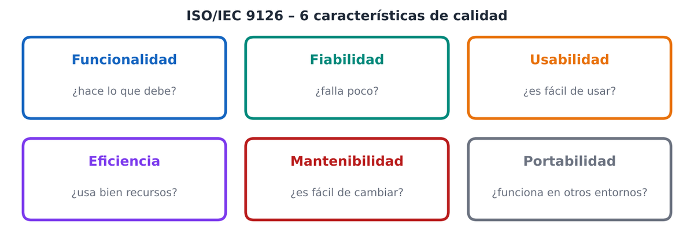
Modelo ISO/IEC 9126: las seis características.
UD5: Calidad en el desarrollo del software
Modelo
Rasgo
McCall
Modelo inicial por factores de calidad (operación, revisión y transición)
Boehm
Modelo inicial jerárquico
ISO 9126
Seis características y subcaracterísticas; evolucionó hacia la familia ISO/IEC 25000
CISQ (Bill Curtis)
Cinco características: fiabilidad, eficiencia de rendimiento, seguridad, mantenibilidad y tamaño
Calidad externa: lo que percibe el usuario. Calidad interna: lo que no ve (código, arquitectura); se mide antes y predice la externa.
Muchos defectos graves nacen de errores básicos de código; la mayoría de vulnerabilidades (inyección SQL, XSS) proviene de mala codificación.
Mantenibilidad ↔ deuda técnica (coste acumulado por falta de mantenimiento).
Tamaño del software: técnico (p. ej. líneas de código) o funcional (puntos de función).
Modelo de madurez CMM
UD5: Calidad en el desarrollo del software
Nivel
Nombre
Característica
1
Inicial
Procesos ad hoc, poco predecibles
2
Repetible
Gestión básica de proyectos; se repiten éxitos
3
Definido
Procesos documentados y estándar en la organización
4
Gestionado
Procesos medidos y controlados cuantitativamente
5
Optimizado
Mejora continua
Ojo: Los niveles CMM son inclusivos: para alcanzar un nivel hay que haber logrado y mantener todos los anteriores.
Depuración, pruebas de caja negra y blanca, JUnit, plan de pruebas e informes.
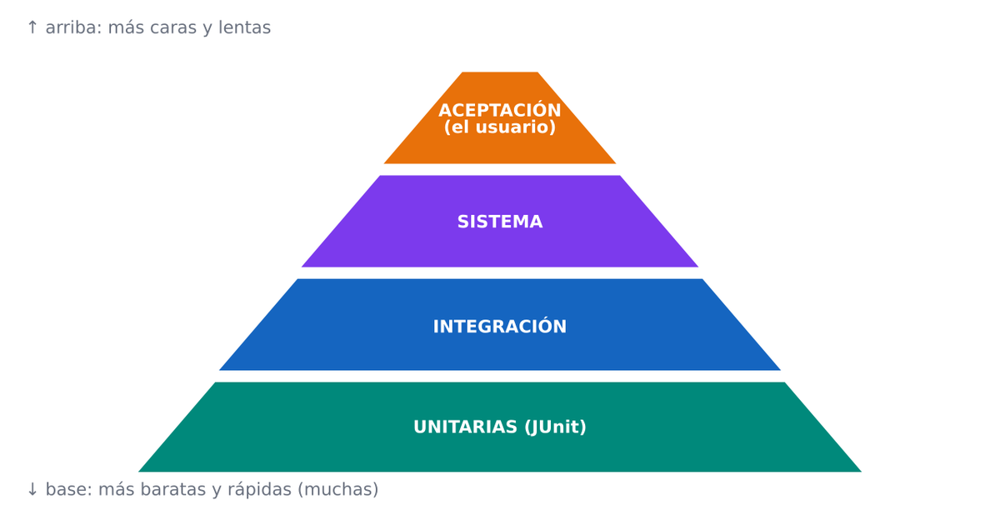
Niveles de prueba: muchas unitarias en la base, pocas de aceptación arriba.
UD6: Identificación de los tipos de pruebas
Caja NEGRA
Caja BLANCA (cristal)
Examina
Solo entradas y salidas; el software es una caja cerrada
La estructura de control interna del programa
Técnicas
Clases de equivalencia, valores límite
Cobertura de sentencias, ramas y caminos (pruebas de trayectoria)
Comprueba
Que los resultados son correctos para los datos dados
Que se recorren los caminos lógicos del código
Idea clave:Clases de equivalencia: se agrupan los datos de entrada que el programa trata igual y se diseña un caso por clase (un mismo caso puede cubrir varias clases).
Depuración
Depurar ≠ probar: probar detecta el fallo; depurar localiza y corrige su causa. El depurador permite ejecución paso a paso (línea a línea), puntos de ruptura e inspección de variables. Escribir mensajes de salida es una técnica muy usada pero rudimentaria.
Cada prueba debe ser independiente: no asumir orden de ejecución.
Las pruebas automatizadas se repiten sin intervención humana, son rápidas y repetibles.
En ejecución se obtiene un objeto org.junit.runner.Result.
Plan, casos e informes
UD6: Identificación de los tipos de pruebas
Documento
Contenido
Plan de pruebas
Enfoque sistemático para probar un sistema (alcance, recursos, calendario)
Caso de prueba
Preparación + pasos + resultado esperado y espacio para el resultado real
IEEE 829-2008
Estándar de documentación de pruebas de software
Seguimiento de ejecución
Cuándo se ejecutó, quién, cuánto tardó y resultado
Informes de pruebas
Resumen de los resultados para la organización
Ojo: Ejecución manual vs. automatizada: normalmente se combinan. Si el software es nuevo, se recomienda duplicar la estimación inicial del calendario de pruebas.
Autotest UD6
UD7
Excepciones
Cómo gestiona Java los errores: try/catch/finally, jerarquía, comprobadas vs. no comprobadas y buenas prácticas.
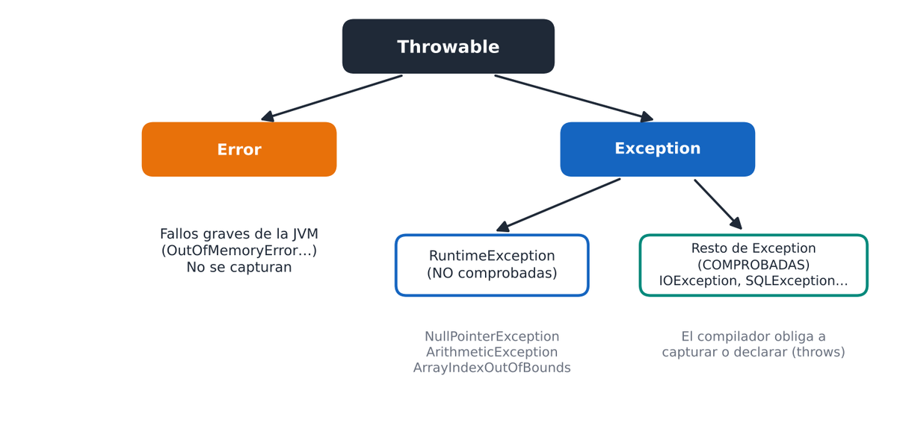
Jerarquía de excepciones en Java.
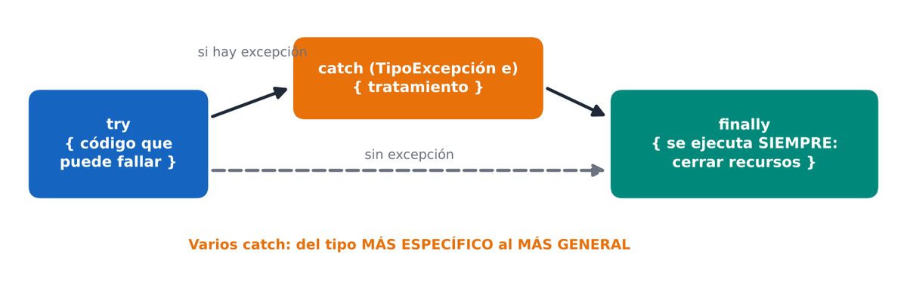
Flujo try / catch / finally.
try {
FileReader f = newFileReader("datos.txt");
} catch (FileNotFoundException e) { // más específica primeroSystem.err.println("No existe: " + e.getMessage());
} catch (Exception e) { // más general al finalthrownewMiExcepcion("Error leyendo", e); // excepción encadenada
} finally {
// cerrar archivos/conexiones: se ejecuta siempre
}
UD7: Excepciones
Concepto
Qué recordar
Excepción
Objeto que se genera ante una situación anómala; el sistema busca un manejador recorriendo la pila de llamadas
try / catch
El catch debe ir inmediatamente después del try; sin código intermedio
finally
Se ejecuta siempre (clave para liberar recursos), salvo que la JVM termine o el hilo muera/se interrumpa
throw / throws
throw lanza una excepción · throws la declara en la firma del método
Comprobadas
El compilador obliga a capturarlas o declararlas (recuperables, p. ej. IOException)
RuntimeException / Error
No obligatorias: errores de programación (Runtime) o fallos graves (Error)
Excepciones propias
Se crean extendiendo Exception (o una subclase)
Idea clave: Si ningún método de la pila trata la excepción, el programa termina. Capturar Exception a secas es mala práctica: oculta errores específicos y hace el código más propenso a fallos.
Truco: Orden de los catch: de lo específico a lo general (como un embudo que se va abriendo).
Autotest UD7
UD8
Documentación
Qué documentos se producen, cómo se estructuran y cómo se genera documentación automática del código.
UD8: Documentación
Documento
Para qué sirve
Rasgo
Requisitos
Qué debe hacer el sistema
Su necesidad crece con complejidad, impacto y vida útil del software
Arquitectura
Estructura global
Parco en detalles, detallado en la explicación
Estudio comercial
Justifica alternativas
Basado en investigación profunda y sin jerga innecesaria
Diseño de BD (DDD)
Diseño conceptual, lógico y físico
Parte importante del diseño en software empresarial
De código
Cómo funciona internamente
Estilo de guía de referencia; se genera automáticamente
De usuario
Cómo se usa el programa
A veces lo escribe quien conoce la API
Documentación automática
Herramientas como Javadoc, Doxygen, NDoc o EiffelStudio extraen los comentarios y especificaciones del código fuente y generan manuales de referencia en texto o HTML. Así la documentación se mantiene cerca del código.
/**
* Calcula el área de un rectángulo.
* @param base longitud de la base
* @param altura longitud de la altura
* @return el área
*/publicdouble area(double base, double altura) { return base * altura; }
Donald Knuth defiende la programación literaria: escribir código y documentación a la vez y en el mismo sitio.
Documentar el código es añadir información suficiente para que los humanos, no solo los ordenadores, entiendan qué hace.
Los estándares de codificación (nombres, indentación, comentarios) mejoran la legibilidad y el mantenimiento.
Se dedica a documentar entre el 20 y el 30 % del esfuerzo de desarrollo.
Idea clave:Indentación: escribir las estructuras anidadas con espacios/tabuladores delante para distinguirlas con facilidad.
Autotest UD8
Última horaChuleta final
Lo que conviene releer la víspera del examen. Los puertos distintos del 20/21 de FTP son valores estándar generales.
Quién es quién
Quién es quién
Persona
Se le asocia con…
Boehm
Modelo en espiral y COCOMO
Albrecht (IBM, 1979)
Puntos de función
Putnam (1978)
Modelo SLIM de estimación
Jacobson
Casos de uso (1992); con Booch y Rumbaugh = «los tres amigos» → UML / Proceso Unificado
Alan Kay (1993)
Las 6 características de un lenguaje orientado a objetos
Bertrand Meyer
Parámetros de calidad OO: extrínsecos (fiabilidad) e intrínsecos (modularidad)